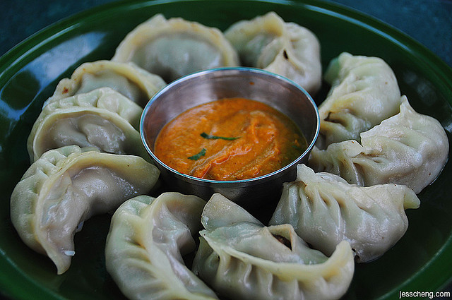

Recipe for the Momo.

Nepali momos are a type of steamed dumpling that are a popular street food and snack in Nepal. They are usually filled with minced meat, such as chicken or buffalo, or vegetables such as cabbage, carrot, and spinach. The filling is seasoned with spices such as cumin, coriander, and garlic, and often mixed with chopped onions or scallions.
The dumpling dough is typically made from flour and water and rolled out into circles. The filling is then placed in the center of the dough, and the edges are pinched together to seal the dumpling. The momos are then steamed in a momo steamer or a traditional bamboo basket called a thongba.
Nepali momos are typically served with a spicy tomato-based sauce or a spicy sesame and tomato sauce. They can be enjoyed as a snack or as a meal, and are often served with a side of achaar, a spicy pickle made from vegetables or fruits. Momos are a beloved Nepali food and are often enjoyed during festivals and special occasions.
Ingredient for the recipe.
For the dough:
For the filling:
- Ground meat, such as chicken or buffalo
- Onion, finely chopped
- Garlic, finely chopped
- Ginger, finely chopped
- Salt
- Cumin powder
- Coriander powder
- Soy sauce or tomato ketchup
- Oil
- Green onions or scallions, finely chopped
For the dipping sauce:
- Tomatoes, chopped
- Garlic, minced
- Ginger, grated
- Red chili powder or green chili, chopped
- Salt
- Soy sauce or vinegar
Instruction for the recipe
For dipping sauce
- In a blender, combine the chopped tomatoes, minced garlic, grated ginger, red chili powder or green chili, salt, and soy sauce or vinegar.
- Blend the mixture until it forms a smooth sauce.
- Transfer the sauce to a small serving bowl.
For the momo:
- In a mixing bowl, combine the flour and water, and knead the mixture until it forms a smooth dough.
- Cover the dough with a damp cloth and let it rest for about 30 minutes.
- In a separate mixing bowl, combine the ground meat or vegetables with chopped onions, garlic, ginger, salt, cumin powder, coriander powder, soy sauce or tomato ketchup, and oil.
- Mix the ingredients well until they are fully combined.
- Add the chopped green onions or scallions, and mix them into the filling.
- Cover the filling and let it marinate for at least 30 minutes.
- Now divide the dough into small portions and roll them into small circles, about 3-4 inches in diameter.
- Place a spoonful of the filling mixture in the center of each circle.
- Pinch the edges of the circle together to create a pleated pattern and seal the momo.
- Repeat the process until all the dough and filling are used up.
- Afte that, grease the steamer or a bamboo basket with oil to prevent sticking.
- Arrange the momos in the steamer or basket, making sure to leave some space between them.
- Steam the momos for 10-15 minutes or until they are fully cooked.
- Arrange the momos on a plate or a basket.
- Serve the momos hot with the dipping sauce on the side.
Now enjoy your delicious Nepali momos!
Return to the top
Return to the main page